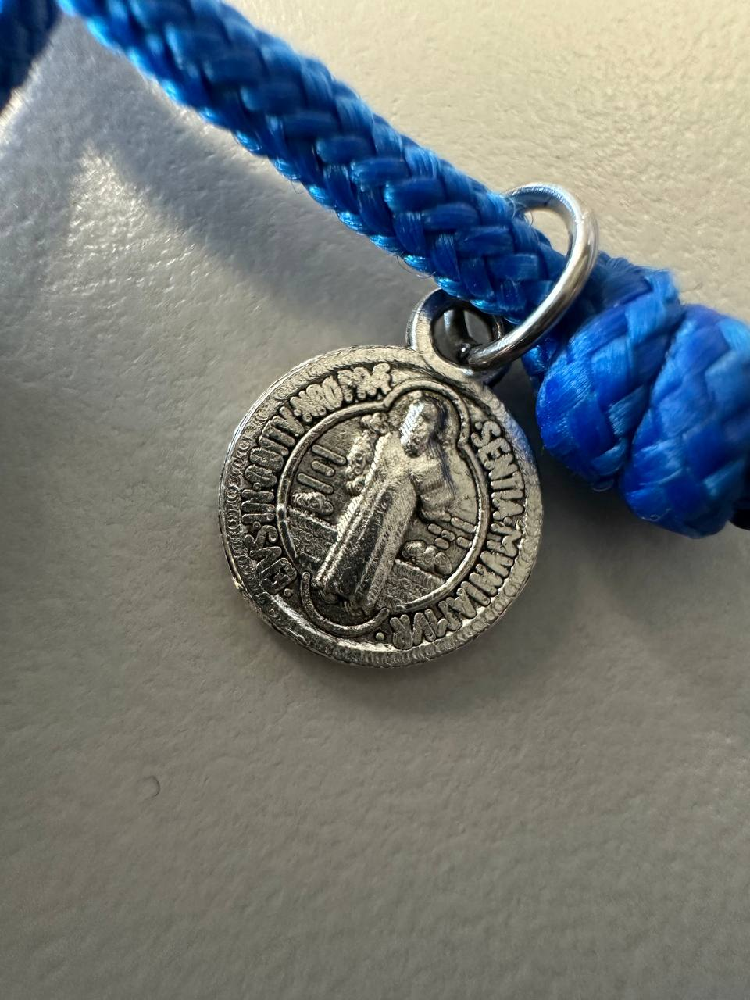
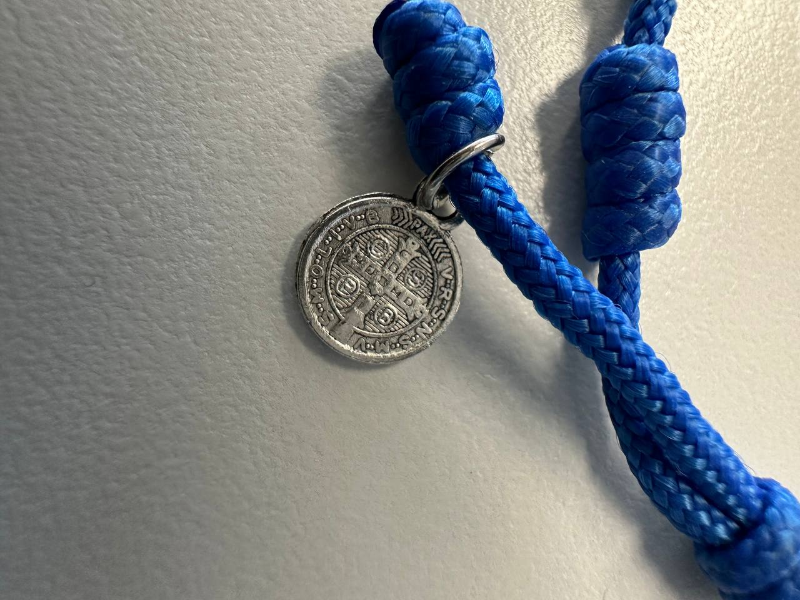

← Back to Cypress Flips


More Finds
Handmade Saint Benedict Rosary Bracelet - 95 Paracord
$10.00
Website direct local pickup price — marketplace listings may be higher.
A handmade rosary bracelet built around a Saint Benedict medallion and braided from genuine 95 paracord — the same tough, abrasion-resistant cord used for military-spec survival gear. Stronger and more durable than the thin twisted-nylon rosary bracelets you usually find, this one is meant to be worn daily without fraying, stretching, or losing shape.
What's included:
• Braided 95 paracord bracelet in your choice of color (blue is shown in the photo)
• Saint Benedict medal (one of the most popular Catholic sacramentals — the medal itself is a long-standing sign of devotion, protection, and a reminder to pray)
• Sturdy split-ring connector so the medal hangs cleanly and moves freely without pulling on the weave
Why this one holds up better than the usual swap-meet rosary:
The swap-meet version is twisted nylon that frays fast and pills after a few weeks of wear. 95 paracord is a real upgrade: it has a 550 lb tensile rating, resists sweat and water, and keeps its color and shape much longer. The Saint Benedict medal hangs on a solid split ring instead of a thin jump ring, so it doesn't bend or pull off during normal use.
Custom orders welcome (slight upcharge for custom work):
• Different paracord color — black, white, red, OD green, coyote, pink, purple, two-tone, etc.
• Different length (standard men's, standard women's, kid's, oversized — just tell me your wrist measurement)
• Different medal — Miraculous Medal, Saint Michael, Saint Christopher, scapular medal, crucifix, or no medal at all
• Clasp style — barrel knot pull, side-release buckle, or no clasp (slip-on)
• A matching paracord rosary (five-decade neck rosary) can also be made to match
Condition: New, handmade to order. The piece shown in the photo is the prototype in cobalt blue. Your bracelet will look essentially identical in construction, with the color and medal swapped to your spec.
Market context: Comparable rosary bracelets at the local swap meet run around $10 with thinner twisted-nylon cord and often a smaller, lower-quality medal. This one uses a noticeably more durable cord, a solid split-ring connection, and a heavier Saint Benedict medal — and you can pick your color, length, and medal. At $10 it's priced to match the swap-meet benchmark while still being a meaningful step up in build quality.
Local pickup available in Cypress, CA.
Have stuff like this to sell? I pay cash for games, figures, and collections.